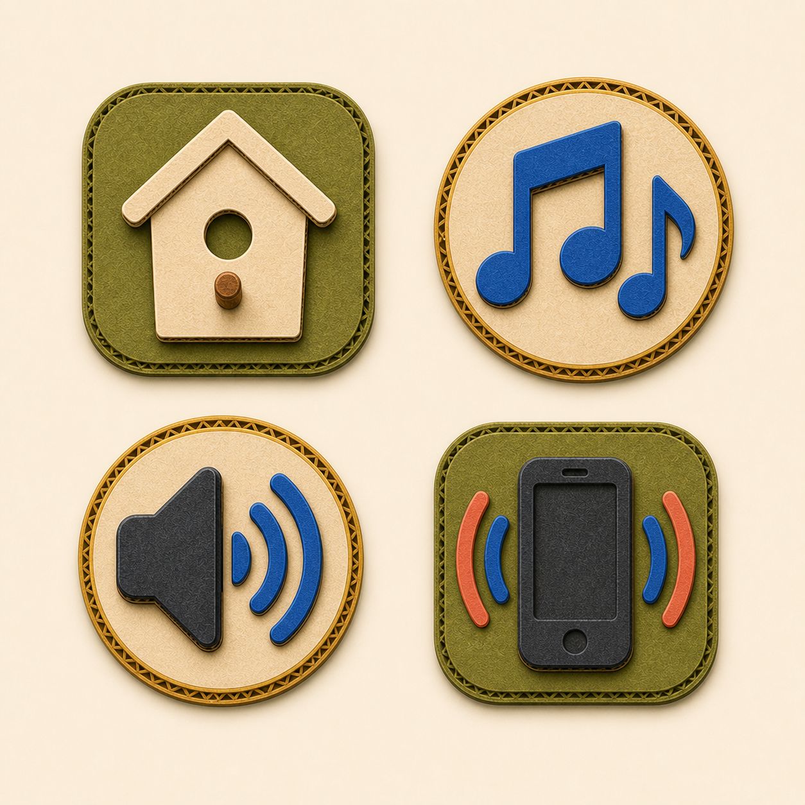

Find the Bird · asset batch 4 of 6
Settings controls
Four phone-scale controls share one visual weight and padding system. The home control becomes a birdhouse without sacrificing recognition.

Grid order
Home
Music
Sound
Vibration
Approval gate
- Every control is recognizable without text.
- The four icons have consistent optical weight and padding.
- The birdhouse still reads immediately as Home.
- Shapes remain clean when reduced to runtime size.